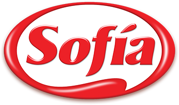

| FINO INDUSTRIAS DE ACEITE SA |
 |
Ser la empresa agroindustrial y de consumo masivo líder en Bolivia, con presencia relevante en Latinoamérica. Nuestro liderazgo está basado en una cultura de excelencia operativa, capacidad de innovación y desarrollo de marcas líderes |
Aceites comestibles de soya y girasol
Mantecas y margarinas
Harinas de soya y girasol
Jabones líquidos, en polvo y de lavar
Aceites crudos de soya y girasol
Torta de soya y girasol
|
Telf.: (591 2)245 5441
Fax.: (591 2)245 5972
Casilla 1932 |
| ARCOR BOLIVIA |
 |
Ser una empresa líder de alimentos y golosinas en Latinoamérica y reconocida en el mercado internacional, destacándonos por nuestras prácticas sustentables y por nuestra capacidad de ingresar en nuevos negocios. |
helados
galletas
masticables y chicles
|
Telf.: (591 2)788185000
Fax.: (591 8)245 14645
Casilla 0000 |
| Sofía |
 |
Ser la primera opción de alimentos para el bienestar de la familia en toda ocasión. |
pollo
pavo
cerdo
embutidos
comida congelada
|
Telf.: (591 2)7476845600
Fax.: (591 8)245 54444545
Casilla 0000 |
| CERVECERÍA BOLIVIANA NACIONAL CBN |
 |
ser la empresa líder en la industria de bebidas en Bolivia. También busca unir a las personas para construir un mundo mejor. |
Cervezas
gaseosas
Bebidas energeticas
Agua natural
|
Telf.: (591 2)7156565630
Fax.: (591 8)245374 45416
Casilla 0000 |
| NESTLÉ BOLIVIA |
 |
Nuestra ambición es luchar por cero impacto ambiental en nuestras operaciones. Tenemos compromisos públicos de utilizar ingredientes de origen responsable y recursos renovables, operar de manera más eficiente, eliminar el desperdicio y administrar el agua de manera responsable. |
Cafes
Bebidas
Lacteos
Nutricion infantil
Galletas
Chocolates
Cereales
|
Telf.: (591 2)7485218
Fax.: (591 8)245 1458
Casilla 0000 |